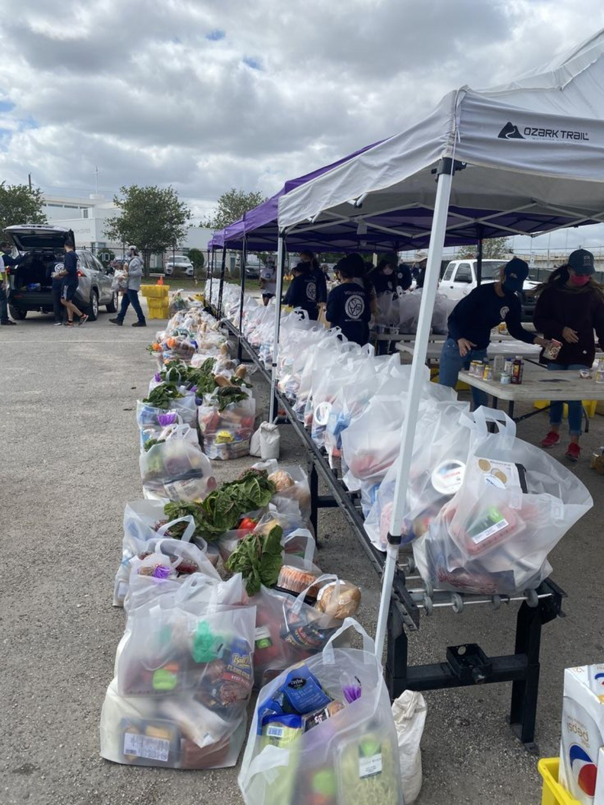

Foundation announcements
Use this space for dated organisational notices, programme launches and governance updates.
Each life touched, each community strengthened and each act of solidarity has a story worth telling—with dignity, consent and accuracy.
This page is ready for articles, announcements and project updates. Stories about beneficiaries should be published only with informed consent, appropriate safeguarding and accurate details.

Use this space for dated organisational notices, programme launches and governance updates.
Share confirmed project milestones, locations, delivery partners and outcomes.
Publish consent-based stories that respect the privacy and agency of the people featured.